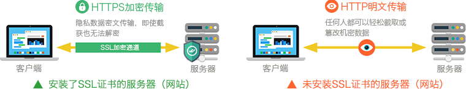
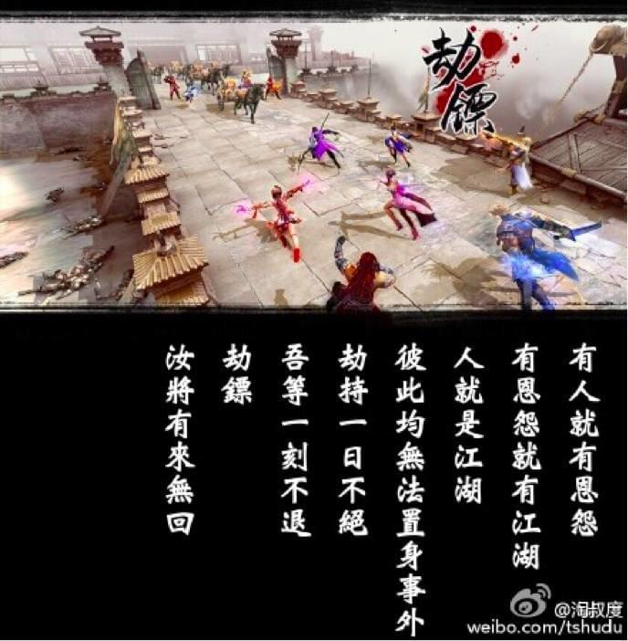

关于HTTPS
HTTPS的主要思想是在不安全的网络上创建一安全信道，并可在使用适当的加密包和服务器证书可被验证且可被信任时，对窃听和中间人攻击提供合理的防护。
HTTPS的信任继承基于预先安装在浏览器中的证书颁发机构（如VeriSign、Microsoft等）（意即“我信任证书颁发机构告诉我应该信任的”）。因此，一个到某网站的HTTPS连接可被信任，当且仅当：
- 用户相信他们的浏览器正确实现了HTTPS且安装了正确的证书颁发机构；
- 用户相信证书颁发机构仅信任合法的网站；
- 被访问的网站提供了一个有效的证书，意即，它是由一个被信任的证书颁发机构签发的（大部分浏览器会对无效的证书发出警告）；
- 该证书正确地验证了被访问的网站（如，访问
https://example时收到了给“Example Inc.”而不是其它组织的证书）； - 或者互联网上相关的节点是值得信任的，或者用户相信本协议的加密层（TLS或SSL）不能被窃听者破坏。
HTTPS加密是如何防止流量劫持
HTTPS，是HTTP over SSL的意思，就是在HTTP明文通道的基础上，增加一层SSL加密通道。SSL协议是用于解决传输层安全问题的网络协议，其核心是基于公钥密码学理论实现了对服务器身份认证、数据的加密保护以及对数据完整性的校验等功能，确保传输数据的机密性和完整性，以及服务器身份的真实性。

因为SSL协议提供了对服务器的身份认证，所以DNS劫持导致连接错误服务器的情况将会被发现进而终止连接，最终导致DNS挟持攻击无法实现;而SSL协议提供的数据加密和完整性校验，也解决了关键信息被嗅探以及数据内容被修改的问题。
使用Fiddler和Burp Suite这种能劫持https的，是因为加载了软件自己的根证书。
HTTPS 前端劫持
在之前介绍的流量劫持文章里，曾提到一种『HTTPS 向下降级』的方案 —— 将页面中的 HTTPS 超链接全都替换成 HTTP 版本，让用户始终以明文的形式进行通信。
看到这，也许大家都会想到一个经典的中间人攻击工具 —— SSLStrip，通过它确实能实现这个效果。
不过今天讲解的，则是完全不同的思路，一种更有效、更先进的解决方案 —— HTTPS 前端劫持。
使用 HTML5 带来的一项新技术 —— Content Security Policy，由于它是浏览器原生支持的，因此实施的非常彻底。
在我们的代理返回头中，加上如下 HTTP 头部，即可完美拦截 https 框架页了：Content-Security-Policy: default-src * data 'unsafe-inline' 'unsafe-eval'; frame-src http://*
它是通过脚本跳转到 HTTPS 地址的。而浏览器的 location 是个及其特殊的属性，它可以被屏蔽，但无法被重写。因此我们难以控制页面的跳转情况。
location.href = "https://passport.jd.com";
如果非要劫持京东页面，我们只能使用白名单的方式，特殊对待该站点。但这样就大幅增加了攻击成本。
尽可能多开启的 HSTS，HTTP Strict Transport Security
其他相关链接
知乎讨论
开启SRI防止七牛CDN HTTPS劫持
【前端安全】JavaScript防http劫持与XSS
扒一扒HTTPS网站的内幕
全站 HTTPS 来了
(https://yq.aliyun.com/articles/2978)
SSL/TLS协议运行机制的概述
